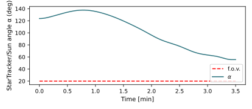
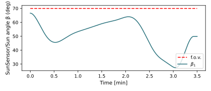
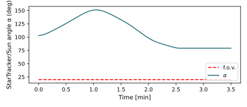
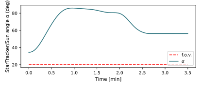
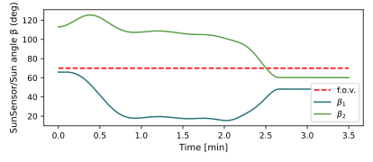

scenarioAttitudeConstrainedManeuver
Overview
This script sets up a 6-DOF spacecraft which is orbiting the Earth, in the presence of the Sun. The spacecraft is modelled according to the specifics of the Bevo-2 satellite, that has a sensitive star tracker aligned with the x body axis and two sun sensors aligned with the y and z body axes. In contrast with scenarioAttitudeConstraintViolation the goal of this scenario is to illustrate how to set up a Basilisk simulation using the Module: constrainedAttitudeManeuver module to perform a slew maneuver while ensuring constraint compliance.
The script is found in the folder basilisk/examples and executed by using:
python3 scenarioAttitudeConstrainedManeuver.py
This simulation is set up identically to scenarioAttitudeConstraintViolation. The reader is referred to this scenario for a detailed description of the setup. The only difference in this scenario is that the constraint-naive Module: inertial3D module for attitude pointing is replaced with the Module: constrainedAttitudeManeuver module.
Illustration of Simulation Results
Each run of the script produces 6 figures. Figures 1-4 report, respectively, attitude error, RW motor torque, rate tracking error, and RW speed. These plots are only relevant to the spacecraft / RW dynamics. Figures 5 and 6 show the angle between the boresight vector of the star tracker and the Sun (fig. 5), and of the sun sensor(s) and the Sun (fig. 6). Each plot features a dashed line that represents an angular threshold for that specific instrument.
Each plot describes a slew maneuver performed from an initial inertial attitude \(\sigma_{\mathcal{B/N},i}\) to a final inertial attitude \(\sigma_{\mathcal{B/N},f}\). In scenarioAttitudeConstraintViolation, these sets of attitudes and constraints were chosen to highlight specific constraint violations. This scenario shows how, using Module: constrainedAttitudeManeuver, the constraints are not violated.
show_plots = True, use2SunSensors = False, starTrackerFov = 20, sunSensorFov = 70, attitudeSetCase = 0
This case features the violation of the keep in constraint of the sun sensor only when Module: inertial3D is used. Just for this case, only the sun sensor along the y body axis is considered. Now, the keep in constraint is not violated as the boresight angle never exceeds the 70 def field of view of the instrument.
 show_plots = True, use2SunSensors = True, starTrackerFov = 20, sunSensorFov = 70, attitudeSetCase = 1
In this case, using Module: inertial3D, both the sun sensor boresights exceed the respective thresholds. In this scenario, however, they do not.

show_plots = True, use2SunSensors = True, starTrackerFov = 20, sunSensorFov = 70, attitudeSetCase = 2
In this case, Module: inertial3D violates the keep out constraint of the star tracker, alongside with the keep in constraints for both the sun sensors. The following simulation shows how all the constraints are respected.
 - scenarioAttitudeConstrainedManeuver.plot_attitude_error(timeData, dataSigmaBR)[source]
Plot the attitude errors.
- scenarioAttitudeConstrainedManeuver.plot_rate_error(timeData, dataOmegaBR)[source]
Plot the body angular velocity rate tracking errors.
- scenarioAttitudeConstrainedManeuver.plot_rw_cmd_torque(timeData, dataUsReq, numRW)[source]
Plot the RW command torques.
- scenarioAttitudeConstrainedManeuver.plot_rw_motor_torque(timeData, dataUsReq, dataRW, numRW)[source]
Plot the RW actual motor torques.
- scenarioAttitudeConstrainedManeuver.plot_rw_speeds(timeData, dataOmegaRW, numRW)[source]
Plot the RW spin rates.